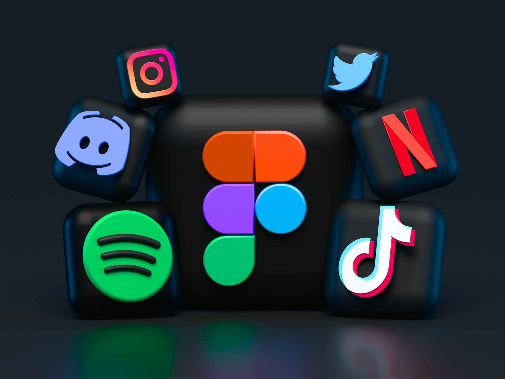

TL;DR
This comprehensive guide offers essential business tools for beginner creators.
Learn about monetization strategies, content creation tools, and methods to build a community while avoiding common pitfalls.
Understanding Creator Monetization
Creating content is just the first step; monetizing your passion is where the magic happens.
Understanding how to translate your creativity into income is crucial for any budding creator.
Monetization can take many forms: ads on your YouTube videos, selling merchandise, offering online courses, or even Patreon subscriptions.
Knowing these options allows you to align your content strategy with your revenue goals.
Seek to identify what resonates most with your audience and optimize accordingly.
Consider your strengths and the type of content you excel at.
This intersection will guide you in selecting the best monetization channels.
Have an open mind and be willing to adapt your initial plans based on feedback and results.
Essential Tools for Content Creation
Every creator needs a robust set of tools to produce high-quality content.
Depending on whether you are a writer, video creator, or visual artist, your toolkit will differ.
For written content, platforms like Grammarly enhance your writing, while tools like Canva help with graphic design.
For video creators, Adobe Premiere Pro or Filmora offer editing capabilities that can elevate your work.
Make sure your equipment — from cameras to microphones — also aligns with your content ambitions.
Having a well-rounded toolkit means you’ll spend less time troubleshooting and more time creating.
Research user reviews and even trial or free versions before committing.

Leveraging Social Media for Growth
Social media is an invaluable asset for any creator aiming to grow their audience.
Crafting a well-defined social media strategy could involve selecting the right platforms for your content type.
Platforms like Instagram are ideal for visual creators, while Twitter can cater well to writers.
Regularly engaging with your audience through posts, stories, and polls can increase your visibility and build a community around your creations.
Remember, it’s not just about posting content; it’s about nurturing relationships.
Analytics tools can help track your growth and understand what type of content resonates best with your followers.
Take time to study and adapt your strategy where necessary.
Monetization Strategies and Platforms
There are various monetization strategies a creator can employ, tailored to their audience and content.
Affiliate marketing, selling digital products, or creating exclusive content through platforms like Patreon are just a few examples.
Consider starting with affiliate marketing, where you earn a commission for promoting products you believe in.
This can be an easy entry point if you already have an engaged audience.
Evaluate different platforms to host your content – think about Etsy for crafts, or Substack for newsletters.
Diversifying your revenue streams can protect you from market fluctuations and enhance your income stability.

Tracking Finances and Expenses
Managing your finances as a creator may seem daunting but is vital for profitability.
Implementing tools for tracking income and expenses is a practical first step.
Software such as QuickBooks, or even simple spreadsheets, can help in this effort.
Make it a habit to categorize expenses related to your business.
This might include your content creation tools, internet bills, or software subscriptions.
Regularly review financial statements to understand your cash flow.
Identifying areas where you can cut costs or optimize spending can lead to significant improvements in your bottom line.
Don't forget to set aside money for taxes!
As an independent creator, you are responsible for managing your taxes, which may differ significantly from traditional employment.
Building a Brand and Community
Your brand distinguishes you in a saturated market.
Define your personal brand by establishing a unique voice and aesthetic that reflects your identity as a creator.
This can involve a consistent visual style across your platforms and a clear message that resonates with your audience.
Engaging your community is equally important.
Host Q&A sessions, live streams, or even collaborative projects to deepen relationships.
Consider creating a newsletter to keep the conversation going beyond social media.
Remember that building a brand takes time, and consistency is key.
Regularly showcasing your work will help reinforce your position as an authority in your niche.
Overcoming Common Pitfalls
Every creator faces challenges and makes mistakes along their journey.
Common pitfalls include inconsistent posting schedules, neglecting audience engagement, or inadequate financial planning.
Recognizing these mistakes early can save time and resources.
To mitigate these risks, consider establishing a content calendar that outlines what and when you will post.
This not only keeps you organized but also makes it easier to engage with your audience consistently.
Be sure to regularly revisit your goals and strategies, adjusting them as necessary based on performance.
Also, don’t hesitate to seek feedback from your audience or mentors.
Constructive criticism can offer invaluable insights to help you grow.
FAQ
What are the best tools for beginners?
Beginners should consider tools like Grammarly for writing, Canva for design, and social media analytics tools to track growth.
How can I start monetizing my content?
You can start by exploring affiliate marketing, creating digital products, or platforms like Patreon to offer exclusive content.
What common mistakes do creators make?
Common mistakes include inconsistent posting, neglecting audience engagement, and poor financial planning.
Photo credits
- Photo 1: Alexander Grey on Unsplash (https://unsplash.com/@sharonmccutcheon) (https://unsplash.com/photos/yellow-green-and-red-lego-blocks-u3pRViUI2oU)
- Photo 2: Kelly Sikkema on Unsplash (https://unsplash.com/@kellysikkema) (https://unsplash.com/photos/white-spiral-notebook-on-brown-wooden-table-xO6NCQjIWFY)
- Photo 3: Alexander Shatov on Unsplash (https://unsplash.com/@alexbemore) (https://unsplash.com/photos/blue-red-and-green-letters-illustration-mr4JG4SYOF8)
- Photo 4: Roman Kraft on Unsplash (https://unsplash.com/@iamromankraft) (https://unsplash.com/photos/close-up-photography-of-information-signage-WUvBROPOsuo)
- Photo 5: Markus Spiske on Unsplash (https://unsplash.com/@markusspiske) (https://unsplash.com/photos/text-XrIfY_4cK1w)
- Photo 6: Ben Duchac on Unsplash (https://unsplash.com/@benshares) (https://unsplash.com/photos/people-sitting-on-grass-field-96DW4Pow3qI)
- Photo 7: Anna Kolosyuk on Unsplash (https://unsplash.com/@anko_) (https://unsplash.com/photos/three-silver-paint-brushes-on-white-textile-D5nh6mCW52c)